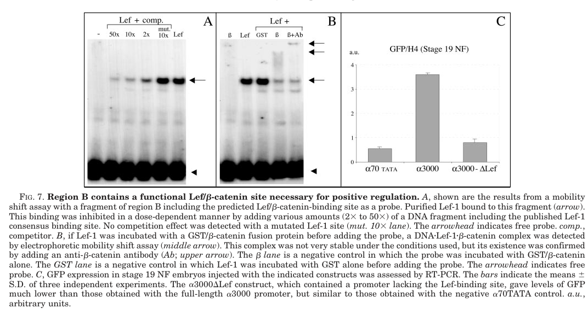

Snai2 (Slug) is a Snail-family C2H2 zinc-finger transcriptional repressor of Xenopus laevis (this entry is the L homeolog). An N-terminal SNAG domain recruits corepressors, including Ajuba-family LIM proteins and the PRC2 histone methyltransferase EZH2, while five C-terminal zinc fingers bind E-box (CAGGTG/CACCTG) elements in RNA polymerase II promoters. snai2 is switched on at late gastrula in the prospective neural crest, after snai1 and downstream of the neural plate border specifiers (Pax3, Zic1) and of Wnt, FGF and BMP-attenuation signals, and is maintained in premigratory and migrating cranial and trunk crest and in lateral plate mesoderm. It acts as a neural crest specifier: early inhibition prevents formation of crest precursors and Snai2 cooperates with Wnt to establish crest identity, although it cannot induce crest alone. Later it is required for crest epithelial-to-mesenchymal transition and migration, during which it occupies the E-cadherin promoter and recruits PRC2 to deposit H3K27me3, dampening (though not abolishing) E-cadherin expression. It also supports early mesoderm and cell survival through a regulatory loop with NF-kappaB. Snail border expression is ancestral in chordates (amphioxus Snail is transiently expressed at the neural plate border), whereas the separate Snai1/Snai2 paralogs and the specifier-type expression dynamics of snai2 are vertebrate features; lamprey has a single snail gene.
| GO Term | Evidence | Action | Reason |
|---|---|---|---|
|
GO:0000978
RNA polymerase II cis-regulatory region sequence-specific DNA binding
|
IBA
GO_REF:0000033 |
ACCEPT |
Summary: IBA (PAINT node PTN002810938, Snail/Slug/Scratch clade) assigning RNA polymerase II cis-regulatory sequence-specific DNA binding. Xenopus Snai2 occupies E-box elements of the E-cadherin promoter in neural crest.
Reason: Snail-family zinc fingers bind E-box (CAGGTG/CACCTG) elements in Pol II promoters; this is the conserved activity of the clade and is confirmed for frog Snai2 by ChIP of tagged Snai2 at E-boxes near the E-cadherin TSS and 2.2 kb upstream in late-neurula embryos. Correct and core.
Supporting Evidence:
PMID:25617436
Snail2 bound preferentially to the E-boxes located around the TSS
|
|
GO:0000978
RNA polymerase II cis-regulatory region sequence-specific DNA binding
|
IEA
GO_REF:0000118 |
ACCEPT |
Summary: TreeGrafter IEA for the same Pol II cis-regulatory sequence-specific DNA binding.
Reason: Same assertion as the IBA, supported by frog ChIP evidence at E-cadherin E-boxes. Correct.
Supporting Evidence:
PMID:25617436
Snail2 bound preferentially to the E-boxes located around the TSS
|
|
GO:0000981
DNA-binding transcription factor activity, RNA polymerase II-specific
|
IBA
GO_REF:0000033 |
ACCEPT |
Summary: IBA for DNA-binding transcription factor activity, RNA polymerase II-specific.
Reason: Correct for the Snail clade and for frog Snai2. The activity is more precisely repression: an Engrailed-repressor fusion of the XSlug DNA-binding domain mimics wild-type XSlug while an activator fusion inhibits it, and Snai2 represses E-cadherin by recruiting PRC2. The more specific repressor term (GO:0001227) is added as NEW rather than modifying the phylogenetic annotation, as done for foxd3-a and sox9-a in this project.
Supporting Evidence:
PMID:10772801
The Engrailed repressor fusion was found to mimic the effects of wild-type XSlug, indicating that XSlug functions as a transcriptional repressor during neural crest formation.
PMID:25617436
The data thus demonstrate that Snail2 helps to recruit PRC2 to the E-cad promoter to set up repressive histone modification marks that result in inhibition of E-cad expression during neural crest EMT.
|
|
GO:0000981
DNA-binding transcription factor activity, RNA polymerase II-specific
|
IEA
GO_REF:0000118 |
ACCEPT |
Summary: TreeGrafter IEA for DNA-binding transcription factor activity, RNA polymerase II-specific.
Reason: Correct, if general; repressor activity is captured by the NEW GO:0001227 row.
Supporting Evidence:
PMID:10772801
The Engrailed repressor fusion was found to mimic the effects of wild-type XSlug, indicating that XSlug functions as a transcriptional repressor during neural crest formation.
|
|
GO:0001755
neural crest cell migration
|
IDA
PMID:12490555 Snail precedes slug in the genetic cascade required for the ... |
ACCEPT |
Summary: Neural crest cell migration from the Aybar et al. 2003 conditional gain/loss-of-function study (activated Xslug-GR increased migrating Slug-positive crest).
Reason: Several independent Xenopus lines of evidence agree that Snai2 acts during crest migration, not only specification: hormone-inducible inhibition of XSlug at later stages blocks migration without blocking precursor formation; antisense slug RNA inhibits migration and loss of cartilage derivatives, rescued by Slug or Snail; Snai2 directly represses E-cadherin through PRC2 at the stage of crest EMT. Snai2 does work in this process (transcriptional repression of epithelial adhesion genes) and the role is conserved (chick Slug). Core. The cached Aybar abstract foregrounds Snail, but the curator had full text and the role is independently supported.
Supporting Evidence:
PMID:12490555
Snail lies upstream of Slug in the genetic cascade leading to neural crest formation
PMID:10772801
inhibition of XSlug function at early stages prevents the formation of neural crest precursors, while inhibition at later stages interferes with neural crest migration
PMID:10452849
These studies indicate that XSlug is required for neural crest migration
PMID:25617436
The data thus demonstrate that Snail2 helps to recruit PRC2 to the E-cad promoter to set up repressive histone modification marks that result in inhibition of E-cad expression during neural crest EMT.
|
|
GO:0001755
neural crest cell migration
|
IEA
GO_REF:0000117 |
ACCEPT |
Summary: ARBA machine-learning IEA for neural crest cell migration.
Reason: Consistent with the experimental evidence for frog Snai2 (see IDA row).
Supporting Evidence:
PMID:10772801
inhibition of XSlug function at early stages prevents the formation of neural crest precursors, while inhibition at later stages interferes with neural crest migration
PMID:10452849
These studies indicate that XSlug is required for neural crest migration
|
|
GO:0005515
protein binding
|
IPI
PMID:27189455 Elongator Protein 3 (Elp3) stabilizes Snail1 and regulates n... |
REMOVE |
Summary: IPI with Elp3 (Q5HZM6): mouse Elp3 co-immunoprecipitated Xenopus Slug, and xSlug rescued Elp3 morphant migration defects.
Reason: Generic protein binding is uninformative. In the paper, Elp3 binds the zinc-finger region of Snail1 and stabilises it against ubiquitin-mediated degradation; the Slug co-IP is a supplementary extension. Elp3 is an upstream regulator of Snail-protein stability rather than a corepressor or a partner through which Snai2 executes its function, so no more specific Snai2 molecular function follows from it. Removal does not dispute the interaction. Informative Snai2 partner binding (SNAG-dependent Ajuba LIM corepressors, EZH2/PRC2) is captured instead as NEW transcription corepressor binding.
Supporting Evidence:
PMID:27189455
Indeed, mElp3 pulled down efficiently xSlug in a co-IP experiment
PMID:27189455
Thus, we favor the model that Elp3 binds and stabilizes Snail1, which is required for the transactivation of mesenchymal genes.
|
|
GO:0005634
nucleus
|
IBA
GO_REF:0000033 |
ACCEPT |
Summary: IBA: nucleus (is_active_in).
Reason: Snai2 is a chromatin-bound transcriptional repressor; its activity (E-box occupancy, PRC2 recruitment and H3K27me3 deposition at the E-cadherin promoter) is nuclear. Endogenous frog protein localisation has not been imaged, but the IBA is well founded.
Supporting Evidence:
PMID:25617436
The data thus demonstrate that Snail2 helps to recruit PRC2 to the E-cad promoter to set up repressive histone modification marks that result in inhibition of E-cad expression during neural crest EMT.
file:XENLA/snai2/snai2-uniprot.txt
SUBCELLULAR LOCATION: Nucleus
file:XENLA/snai2/snai2-deep-research-falcon.md
it should not be annotated as secreted or as a cell-surface receptor.
|
|
GO:0005634
nucleus
|
IEA
GO_REF:0000044 |
ACCEPT |
Summary: UniProt subcellular-location IEA: nucleus.
Reason: Consistent with nuclear transcriptional repressor activity.
Supporting Evidence:
file:XENLA/snai2/snai2-uniprot.txt
SUBCELLULAR LOCATION: Nucleus
|
|
GO:0006355
regulation of DNA-templated transcription
|
IBA
GO_REF:0000033 |
ACCEPT |
Summary: IBA: regulation of DNA-templated transcription.
Reason: Correct but general; Snai2 negatively regulates Pol II transcription (E-cadherin). The specific process GO:0000122 is added as NEW; the broad IBA is retained.
Supporting Evidence:
PMID:10772801
The Engrailed repressor fusion was found to mimic the effects of wild-type XSlug, indicating that XSlug functions as a transcriptional repressor during neural crest formation.
|
|
GO:0006355
regulation of DNA-templated transcription
|
IEA
GO_REF:0000118 |
ACCEPT |
Summary: TreeGrafter IEA: regulation of DNA-templated transcription.
Reason: Correct, general; see IBA row.
Supporting Evidence:
PMID:10772801
The Engrailed repressor fusion was found to mimic the effects of wild-type XSlug, indicating that XSlug functions as a transcriptional repressor during neural crest formation.
|
|
GO:0006357
regulation of transcription by RNA polymerase II
|
IEA
GO_REF:0000108 |
ACCEPT |
Summary: Inter-ontology IEA (from GO:0000981): regulation of transcription by RNA polymerase II.
Reason: Logically entailed by Pol II-specific DNA-binding TF activity; correct. The direction (negative) is captured by NEW GO:0000122.
Supporting Evidence:
PMID:25617436
The data thus demonstrate that Snail2 helps to recruit PRC2 to the E-cad promoter to set up repressive histone modification marks that result in inhibition of E-cad expression during neural crest EMT.
|
|
GO:0014029
neural crest formation
|
TAS
PMID:15242799 Cardiac neural crest ablation alters Id2 gene expression in ... |
MODIFY |
Summary: TAS (AgBase) to neural crest formation from Martinsen et al. 2004, a chick/Xenopus cardiac neural crest ablation study of Id2 expression.
Reason: The cited paper (abstract-only in cache) concerns Id2 expression after cardiac crest ablation and does not appear to study Slug function; Slug was probably cited or used as a crest marker. The biological claim that Snai2 acts in crest formation is nevertheless sound. Following the project convention adopted for sox10 and sox9-a, GO:0014029 (formation of the border region of ectoderm as a whole) is reserved for genes acting on the border region, while crest specifiers are placed at GO:0014036 neural crest cell fate specification (part_of GO:0014034 part_of GO:0014029). Snai2 is clearly a specifier, not a border gene: it comes on after snai1 inside the prospective crest, and its knockdown leaves the border genes zic1 and pax3 intact. The weak TAS reference should ideally be replaced by the Xenopus experimental papers.
Proposed replacements:
neural crest cell fate specification
Supporting Evidence:
PMID:25617436
By contrast, knockdown of Snail2 did not appreciably diminish either Zic1 or Pax3 levels
PMID:7720581
A related zinc-finger gene called Slug (Xslu) is expressed specifically in this tissue (i.e. the prospective crest) when the convergence extension movements are completed.
PMID:10772801
inhibition of XSlug function at early stages prevents the formation of neural crest precursors, while inhibition at later stages interferes with neural crest migration
|
|
GO:0014036
neural crest cell fate specification
|
IEA
GO_REF:0000117 |
ACCEPT |
Summary: ARBA IEA: neural crest cell fate specification.
Reason: Matches the experimental evidence; this is the right layer for Snai2.
Supporting Evidence:
PMID:10772801
inhibition of XSlug function at early stages prevents the formation of neural crest precursors, while inhibition at later stages interferes with neural crest migration
PMID:25617436
By contrast, knockdown of Snail2 did not appreciably diminish either Zic1 or Pax3 levels
|
|
GO:0014036
neural crest cell fate specification
|
IGI
PMID:12490555 Snail precedes slug in the genetic cascade required for the ... |
ACCEPT |
Summary: IGI with snai1 (P19382) from Aybar et al. 2003: dominant-negative/rescue epistasis placing Snail upstream of Slug in crest specification.
Reason: Synthesised picture: snai2 is expressed in the prospective crest after the border is established; early inhibition of XSlug prevents crest precursor formation; Slug MO abolishes Sox9 crest expression; Snai2 overexpression expands crest markers (in an EZH2-dependent way) and, together with Wnt, is sufficient to establish a crest state, though alone it is insufficient to induce crest in naive ectoderm. Its loss does not affect the border genes zic1/pax3. This places Snai2 in the neural crest specifier layer, downstream of the border specifiers and of snai1, and GO:0014036 is the right term. Core.
Supporting Evidence:
PMID:12490555
Snail lies upstream of Slug in the genetic cascade leading to neural crest formation
PMID:12490555
Slug alone is unable to induce other neural crest markers in animal cap assays
PMID:10772801
inhibition of XSlug function at early stages prevents the formation of neural crest precursors, while inhibition at later stages interferes with neural crest migration
PMID:17205110
Injection of the Slug MO into one cell of a two cell embryo blocks the expression of Sox9 on the injected side
PMID:25617436
By contrast, knockdown of Snail2 did not appreciably diminish either Zic1 or Pax3 levels
PMID:25931449
Snail2 together with Wnt signaling is sufficient to establish a neural crest state
PMID:9609823
Overexpression of the zinc finger transcription factor Slug, one of the earliest markers of neural crest formation, is insufficient for neural crest induction.
|
|
GO:0001227
DNA-binding transcription repressor activity, RNA polymerase II-specific
|
IDA
PMID:25617436 Snail2/Slug cooperates with Polycomb repressive complex 2 (P... |
NEW |
Summary: Snai2 is a sequence-specific Pol II transcriptional repressor.
Reason: Engrailed-repressor fusion of the XSlug DNA-binding domain phenocopies wild-type XSlug whereas a Gal4-activator fusion is inhibitory (LaBonne and Bronner-Fraser 2000); tagged Snai2 occupies E-boxes of the E-cadherin promoter and is required for EZH2 occupancy and H3K27me3 there, with E-cadherin RNA rising in Snai2 morphant crest at EMT stages (Tien 2015). The SNAG repression domain is conserved. Consistent with the repressor terms added for foxd3-a in this project.
Supporting Evidence:
PMID:10772801
The Engrailed repressor fusion was found to mimic the effects of wild-type XSlug, indicating that XSlug functions as a transcriptional repressor during neural crest formation.
PMID:25617436
Snail2 bound preferentially to the E-boxes located around the TSS
PMID:25617436
The data thus demonstrate that Snail2 helps to recruit PRC2 to the E-cad promoter to set up repressive histone modification marks that result in inhibition of E-cad expression during neural crest EMT.
file:XENLA/snai2/snai2-uniprot.txt
Probable transcriptional repressor.
|
|
GO:0000122
negative regulation of transcription by RNA polymerase II
|
IDA
PMID:25617436 Snail2/Slug cooperates with Polycomb repressive complex 2 (P... |
NEW |
Summary: Snai2 represses Pol II target genes, directly including E-cadherin (cdh1) in the neural crest.
Reason: Direct promoter occupancy plus Snai2-dependent PRC2 recruitment and H3K27me3 at the E-cadherin promoter during crest EMT; repressor-fusion mimicry in vivo.
Supporting Evidence:
PMID:25617436
The data thus demonstrate that Snail2 helps to recruit PRC2 to the E-cad promoter to set up repressive histone modification marks that result in inhibition of E-cad expression during neural crest EMT.
PMID:10772801
The Engrailed repressor fusion was found to mimic the effects of wild-type XSlug, indicating that XSlug functions as a transcriptional repressor during neural crest formation.
|
|
GO:0001222
transcription corepressor binding
|
IPI
PMID:25617436 Snail2/Slug cooperates with Polycomb repressive complex 2 (P... |
NEW |
Summary: Snai2 binds corepressors: EZH2 (catalytic subunit of PRC2) directly, and the Ajuba-family LIM proteins (Ajuba, LIMD1, WTIP) through its SNAG domain.
Reason: Replaces the uninformative protein-binding class for Snai2 partners with the functionally meaningful one. EZH2 binds Snai2 directly and is recruited by it to repress E-cadherin; Ajuba LIM proteins act as SNAG-dependent Snail/Slug corepressors required for crest development in Xenopus.
Supporting Evidence:
PMID:25617436
EZH2 interacts directly with Snail2
PMID:25617436
Snail2 helps to anchor EZH2 to its target genes to deposit repressive chromatin marks.
PMID:18331720
Ajuba LIM proteins contribute to neural crest development as Snail/Slug corepressors and are required for in vivo Snail/Slug function
|
Q: GO has no neural plate border specification/formation term. Snai2 is a crest specifier, not a border gene (zic1/pax3 are unaffected by its loss), so it should sit at GO:0014036 regardless; but should the AgBase TAS to GO:0014029 neural crest formation be withdrawn or re-supported by Xenopus experimental papers, and should GO:0014029 be reserved for border-acting genes project-wide?
Q: Which crest functions are snai2-specific rather than shared with snai1? Snail and Slug rescue each other in overexpression and maintain each other's expression; snai1 (Tier 3) is also a blastula competence factor whereas snai2 behaves as a definitive crest factor in Xenopus.
Q: Do snai2.L (Q91924) and snai2.S (Q90VW5) differ in expression or activity, and should the experimental annotations on Q91924 also apply to the S homeolog?
Q: Should the Slug-NF-kappaB survival loop and early mesoderm role (Zhang et al. 2006) be annotated (e.g. negative regulation of apoptotic process), or is it a non-core consequence of crest/mesoderm loss?
Q: Should Snai2 carry GO:0036032 neural crest cell delamination (defined as negative regulation of cell adhesion)? Snai2 recruits PRC2 to the E-cadherin promoter and its knockdown raises E-cadherin RNA ~1.5-fold at EMT stages, but migrating Xenopus cranial crest retain E-cadherin and need it to migrate (Huang et al. 2016), and no Snai2-specific delamination phenotype has been scored in frog. Withheld pending a direct delamination assay.
Q: Lamprey has a single snail gene with affinities to both snai1 and snai2, and amphioxus Snail is the only crest specifier expressed (transiently) at the neural plate border: was snai2's crest-specifier deployment acquired after the gnathostome Snai1/Snai2 duplication by subfunctionalisation of an ancestral border-expressed Snail?
Experiment: Homeolog-resolved tagged-Snai2 CUT&RUN in dissected Xenopus neural folds at stages 14 and 19, combined with RNA-seq of snai2 F0 CRISPR crest, to define direct targets at specification versus EMT stages.
Hypothesis: Snai2 directly represses a set of epithelial and alternative-fate genes beyond E-cadherin in premigratory crest.
Type: ChIP-seq
Experiment: Single and combined F0 CRISPR knockouts of snai1 and snai2 (both homeologs) scoring border, specifier and migration markers and cdh1 derepression over time.
Hypothesis: snai1 and snai2 are partially redundant in crest specification but snai2 is specifically required at EMT.
Type: CRISPR knockout
The research report should be a detailed narrative explaining the function, biological processes, and localization of the gene product. Citations should be given for all claims.
You should prioritize authoritative reviews and primary scientific literature when conducting research. You can supplement
this with annotations you find in gene/protein databases, but these can be outdated or inaccurate.
We are specifically interested in the primary function of the gene - for enzymes, what reaction is catalyzed, and what is the substrate specificity? For transporters, what is the substrate? For structural proteins or adapters, what is the broader structural role? For signaling molecules, what is the role in the pathway.
We are interested in where in or outside the cell the gene product carries out its function.
We are also interested in the signaling or biochemical pathways in which the gene functions. We are less interested in broad pleiotropic effects, except where these elucidate the precise role.
Include evidence where possible. We are interested in both experimental evidence as well as inference from structure, evolution, or bioinformatic analysis. Precise studies should be prioritized over high-throughput, where available.
The protein specified here by UniProt Q91924 is Xenopus laevis Snai2, historically called Slug, XSlug, or slug-alpha. It is not Snai1/Snail: Xenopus studies examine Snail and Slug as distinct, related genes and place Snail earlier in the neural-crest regulatory cascade. The supplied UniProt designation is consistent with the literature’s Snail-family zinc-finger transcriptional repressor. A genomic comparison found two expressed X. laevis Slug pseudoalleles whose predicted proteins have five identical zinc fingers; the available papers do not independently establish which pseudoallele corresponds to accession Q91924. Consequently, conclusions from experiments described simply as “XSlug” should not automatically be assigned to one pseudoallele. (zhang2006annfκband pages 1-2, aybar2003snailprecedesslug pages 1-2, vallin2001cloningandcharacterization pages 7-7, vallin2001cloningandcharacterization pages 3-3)
Primary molecular role: Snai2 is a sequence-directed transcriptional repressor that helps establish and maintain a viable, appropriately migratory neural-crest population. Its C-terminal C2H2 zinc fingers provide DNA-recognition capacity, while its N-terminal SNAG region participates in assembling a repression complex. It is neither an enzyme with a catalytic substrate nor a membrane transporter. Snail-family factors recognize E-box-related DNA sequences; experimentally characterized mammalian Snai2 recognizes E2-boxes including CAGGTG/CACCTG, but the complete target-site specificity of X. laevis Q91924 has not been established by equivalent protein–DNA experiments. In Xenopus embryos, a fusion of the Slug zinc-finger region to an alternative Engrailed repression domain rescues loss of Slug-dependent neural-crest development, whereas the zinc-finger region alone does not. This is particularly persuasive evidence that DNA targeting coupled to repression, rather than zinc-finger binding alone, is central to its developmental activity. (zhang2006annfκband pages 1-2, langer2008ajubalimproteins pages 5-6, villarejo2014differentialroleof pages 1-2)
At the tissue level, slug/snai2 RNA is detectable after snai1 during gastrulation—approximately stage 12.5 in the examined Xenopus embryos—and is present in the presumptive cranial neural crest at the neural-plate border. Analyses distinguishing the two X. laevis pseudoalleles found overlapping expression in presumptive cephalic neural-crest territory at stage 14. Their promoter reporters were active at the neural-plate border, most strongly in cranial crest around stage 19, and remained detectable, more weakly, in migrating cells entering the branchial arches at stage 25. Early zygotic Slug RNA has also been reported in dorsal mesendoderm, consistent with functional effects on mesodermal markers. These are principally RNA-expression and promoter-reporter observations, not measurements of endogenous Slug protein abundance. (vallin2001cloningandcharacterization pages 3-3, vallin2001cloningandcharacterization pages 4-6, zhang2006annfκband pages 1-2, aybar2003snailprecedesslug pages 2-3)
At the subcellular level, its DNA-directed repression and interaction with nuclear corepressor machinery place the functional transcription-factor activity in the nucleus; it should not be annotated as secreted or as a cell-surface receptor. Nuclear Snail–Ajuba association and promoter recruitment were directly demonstrated in cultured cells, alongside Xenopus genetic evidence that related Ajuba proteins support XSlug function. Those experiments do not, however, amount to direct immunolocalization of endogenous X. laevis Q91924. Thus nuclear function is strongly supported mechanistically, while the precise endogenous nuclear-versus-cytoplasmic distribution of this particular protein remains less directly documented. (langer2008ajubalimproteins pages 2-4, langer2008ajubalimproteins pages 5-6, langer2008ajubalimproteins pages 1-2, vallin2001cloningandcharacterization pages 3-3)
Wnt input into snai2. Canonical Wnt signaling acts upstream of Slug transcription through LEF/β-catenin. In a promoter study using X. laevis embryos, purified LEF1 bound a Slug-promoter fragment, β-catenin joined the DNA-bound complex, and deletion of eight bases from the LEF site reduced promoter-driven GFP RNA to approximately basal reporter levels. This establishes a specific cis-regulatory Wnt connection; it does not mean that LEF’s site in the snai2 promoter is itself a DNA target bound by Snai2 protein. Promoter-region cooperation indicates that the LEF element alone does not account for the complete neural-crest-specific expression pattern. Current neural-plate-border models additionally incorporate BMP and FGF signaling and factors such as Pax3/Zic1, but their individual connections to Slug should not be given the same direct-promoter evidentiary status as LEF/β-catenin. Vallin et al., Journal of Biological Chemistry, August 2001, https://doi.org/10.1074/jbc.M103167200; Esmaeli et al., International Journal of Developmental Biology, July 2024, https://doi.org/10.1387/ijdb.230231me. Visual evidence: the original study’s cropped Figure 7 shows the DNA-binding assays and loss of reporter activity after LEF-site deletion. (vallin2001cloningandcharacterization pages 7-7, vallin2001cloningandcharacterization pages 7-8, vallin2001cloningandcharacterization media d6d9b910, esmaeli2024molecularsignalingdirecting pages 4-5)
Repression and corepressors. Xenopus XSlug requires Ajuba-family LIM proteins XLIMD1 and XWTIP for its neural-crest-promoting activity. Depleting either cofactor diminishes crest-marker expression; excess cofactor cannot expand neural crest when XSlug is depleted; and XSlug overexpression does not restore expansion when the cofactors are depleted. The Engrailed–Slug zinc-finger fusion bypasses the cofactor-depletion defect, supporting a model in which these proteins enable Snail-family transcriptional repression, rather than acting only by increasing Slug expression. Biochemical interaction through SNAG and recruitment of Ajuba to an E-cadherin promoter were established largely in mammalian cultured cells; these results strengthen the mechanism but should not be recast as chromatin-occupancy proof for a particular endogenous X. laevis Slug target. Langer et al., Developmental Cell, March 2008, https://doi.org/10.1016/j.devcel.2008.01.005. (langer2008ajubalimproteins pages 2-4, langer2008ajubalimproteins pages 4-5, langer2008ajubalimproteins pages 5-6, langer2008ajubalimproteins pages 6-9)
Specification, movement, and survival. Gain-of-function and dominant-negative experiments place Snail upstream of Slug and implicate both in neural-crest specification and migration. In one migration assay, Slug overexpression increased the population of Slug-positive migrating crest cells in 77% of embryos (47 examined). These assays show developmental causality but do not isolate a direct Slug-regulated migration gene. Separately, XSlug depletion increases apoptosis and disrupts mesodermal and neural-crest-related markers. Anti-apoptotic Bcl-xL suppresses the apoptosis phenotype and restores expression of affected markers: Sox9 expression was unaffected in 26/35 rescued embryos and Xbra in 26/32. RelA/NF-κB activity is implicated in a feedback circuit that promotes Slug/Snail expression, while Slug supports NF-κB-responsive output. Zhang et al. classified downregulation of pro-apoptotic caspase-9 RNA as a direct Slug regulatory response using inducible-factor/protein-synthesis-dependence logic; they did not establish direct binding of Q91924 to a mapped caspase-9 promoter by ChIP or binding-site mutagenesis. The Bcl-xL rescue supports a substantial survival component to developmental phenotypes, not proof that every loss of a crest marker reflects a primary specification defect. Aybar et al., Development, February 2003, https://doi.org/10.1242/dev.00238; Zhang et al., PLoS ONE, December 2006, https://doi.org/10.1371/journal.pone.0000106. (aybar2003snailprecedesslug pages 7-8, zhang2006annfκband pages 7-9, zhang2006annfκband pages 4-5, zhang2006annfκband pages 5-7, zhang2006annfκband pages 9-10, zhang2006annfκband pages 2-3)
Timing by protein turnover. The Xenopus F-box protein Ppa recognizes Snail-family proteins, including Slug, as part of ubiquitin–proteasome-dependent control of their abundance. This offers a mechanism for restricting the timing of neural-crest epithelial-to-mesenchymal changes even when snai2 RNA is present. The 2011 paper’s new interaction and degradation experiments focus mainly on other EMT regulators and cite earlier Slug-specific Ppa work; they should not be described as newly demonstrating every Slug-specific phenotype. Lander et al., Journal of Cell Biology, July 2011, https://doi.org/10.1083/jcb.201012085. (lander2011thefboxprotein pages 2-4, lander2011thefboxprotein pages 1-2, lander2011thefboxprotein pages 4-6)
A qualification to the conventional “Slug removes E-cadherin to permit movement” model is important in this species. Mammalian promoter experiments support E-cadherin repression by Snail-family proteins, but an independent X. laevis study found that migrating cranial crest cells retain E-cadherin, alongside other cadherins. E-cadherin depletion impaired their migration and protrusions, and other tested classical cadherins did not replace it. That study did not perturb Slug directly; rather, it shows why Slug-associated crest migration cannot be equated with complete E-cadherin elimination in Xenopus. Huang et al., Developmental Biology, March 2016, https://doi.org/10.1016/j.ydbio.2016.02.007. (huang2016ecadherinisrequired pages 1-2, huang2016ecadherinisrequired pages 4-6)
A 2023 X. laevis Adam11-knockdown study found expanded Slug/Snai2-positive neural-crest territory, alongside Sox8/Sox9 changes and increased canonical Wnt readouts. This adds an upstream context in which Snai2 expression responds to altered signaling; it does not quantify an intrinsic Snai2 biochemical activity or show that Snai2 mediates all Adam11 effects. Pandey et al., Frontiers in Cell and Developmental Biology, September 2023, https://doi.org/10.3389/fcell.2023.1271178. (pandey2023adam11anovel pages 4-6, pandey2023adam11anovel pages 6-10)
In a practical 2024 Xenopus animal-cap differentiation protocol, BMP-receptor inhibition with K02288 plus Wnt-pathway activation with CHIR99021 induced snai2 expression in 82/82 stage-17 explants, versus 0/59 vehicle controls. Treatment also raised β-catenin approximately two- to threefold and lowered phospho-SMAD1/5/8 by more than 80% at the measured stages. Thus snai2 serves as a robust readout for induced neural-crest identity in an experimentally useful model; these data alone do not test whether Snai2 is necessary for reprogramming. Huber and LaBonne, Developmental Biology, January 2024, https://doi.org/10.1016/j.ydbio.2023.10.004. (huber2024smallmoleculemediatedreprogramming pages 3-4)
A separate 2024 comparative analysis reported increasing Xenopus snai2 expression from blastula to later neural-crest stages and showed that perturbing Pou5f3, an upstream regulator, changes snai2 expression. It is evidence for the emerging regulatory context, not a 2024 Snai2 loss-of-function study. York et al., Nature Ecology & Evolution, July 2024, https://doi.org/10.1038/s41559-024-02476-8. Moreover, a frequently cited later-stage snai2:eGFP reporter and Wnt-dependent re-expression study used X. tropicalis, not X. laevis; its differentiating-crest observations are informative comparative evidence, not direct localization or functional proof for Q91924. Li et al., Scientific Reports, August 2019, https://doi.org/10.1038/s41598-019-47665-9. (york2024sharedfeaturesof pages 4-6, york2024sharedfeaturesof pages 6-7, li2019anewtransgenic pages 1-2)
The following summary distinguishes direct functional results from gene-expression readouts and cross-species mechanistic inference. (langer2008ajubalimproteins pages 5-6, huber2024smallmoleculemediatedreprogramming pages 3-4, pandey2023adam11anovel pages 4-6)
| Feature | Strongest X. laevis evidence and limits | Representative peer-reviewed publication |
|---|---|---|
| Identity and domain architecture | Two X. laevis Slug/snai2 pseudoalleles show similar expression; their proteins have five identical zinc fingers. This supports the supplied Q91924 family assignment but does not independently map Q91924 to a specific pseudoallele. (vallin2001cloningandcharacterization pages 7-7, vallin2001cloningandcharacterization pages 3-3) | Vallin et al., J. Biol. Chem. (2001), 10.1074/jbc.M103167200 |
| Upstream Wnt control | Lef-1 bound a conserved site in the Slug/snai2 promoter; β-catenin formed a ternary complex, and deleting 8 bp from the site reduced reporter expression to near-background. This is an upstream element controlling snai2, not a downstream DNA target bound by Snai2 protein. (vallin2001cloningandcharacterization pages 7-7, vallin2001cloningandcharacterization media d6d9b910) | Vallin et al., J. Biol. Chem. (2001), 10.1074/jbc.M103167200 |
| Repressor mechanism and Ajuba cofactors | Depleting XLIMD1/WTIP blocked XSlug-dependent neural-crest development; an Engrailed repression domain fused to Slug zinc fingers rescued the defect, whereas zinc fingers alone did not. Embryo genetics strongly supports repression, but direct XSlug occupancy of an endogenous X. laevis target promoter was not shown. (langer2008ajubalimproteins pages 5-6, langer2008ajubalimproteins pages 6-9) | Langer et al., Developmental Cell (2008), 10.1016/j.devcel.2008.01.005 |
| Survival and NF-κB/Bcl-xL circuit | Slug depletion increased apoptosis; Bcl-xL rescued TUNEL and developmental-marker defects, with Sox9 rescued in 26/35 embryos and Xbra in 26/32. NF-κB perturbations support a feedback circuit. Caspase-9 was called a direct Slug target using protein-synthesis-dependence criteria, but promoter binding or site mutagenesis was not demonstrated. (zhang2006annfκband pages 7-9, zhang2006annfκband pages 4-5, zhang2006annfκband pages 2-3) | Zhang et al., PLoS ONE (2006), 10.1371/journal.pone.0000106 |
| Recent upstream modulation | Adam11 knockdown expanded the Slug/Snai2-positive territory together with Sox8/Sox9 and increased canonical Wnt readouts. Snai2 was principally an expression marker; the study did not perturb Snai2 or quantify a Snai2-specific fold change. (pandey2023adam11anovel pages 4-6, pandey2023adam11anovel pages 6-10) | Pandey et al., Front. Cell Dev. Biol. (2023), 10.3389/fcell.2023.1271178 |
| Current experimental application | BMP inhibition plus Wnt activation induced endogenous snai2 in 82/82 blastula explants versus 0/59 vehicle controls; β-catenin rose 2–3-fold and pSMAD1/5/8 fell by >80%. This validates snai2 as a neural-crest-state readout, not as proof of Snai2 necessity. (huber2024smallmoleculemediatedreprogramming pages 3-4) | Huber & LaBonne, Developmental Biology (2024), 10.1016/j.ydbio.2023.10.004 |
Table: Species-specific evidence supporting the identity, regulation, repressor activity, survival function, and current experimental use of Xenopus laevis Slug/Snai2. The table separates direct mechanistic findings from marker-based or inferential evidence.
Annotation conclusion: The best-supported assignment for X. laevis Q91924 is a nucleus-acting Snail-family, C2H2 zinc-finger transcriptional repressor within the Wnt-responsive neural-crest gene-regulatory network. Xenopus perturbation experiments support roles in crest development, appropriately timed migration-related behavior, and cell survival; direct repression of specific endogenous Xenopus promoters and endogenous protein-level localization are less completely resolved than its developmental function. (langer2008ajubalimproteins pages 5-6, vallin2001cloningandcharacterization pages 7-7, zhang2006annfκband pages 2-3, vallin2001cloningandcharacterization pages 3-3)
References
(zhang2006annfκband pages 1-2): Chi Zhang, Timothy F. Carl, Evan D. Trudeau, Thomas Simmet, and Michael W. Klymkowsky. An nf-κb and slug regulatory loop active in early vertebrate mesoderm. PLoS ONE, 1:e106, Dec 2006. URL: https://doi.org/10.1371/journal.pone.0000106, doi:10.1371/journal.pone.0000106. This article has 63 citations and is from a peer-reviewed journal.
(aybar2003snailprecedesslug pages 1-2): Manuel J. Aybar, M. Angela Nieto, and Roberto Mayor. Snail precedes slug in the genetic cascade required for the specification and migration of the xenopus neural crest. Development, 130:483-494, Feb 2003. URL: https://doi.org/10.1242/dev.00238, doi:10.1242/dev.00238. This article has 303 citations and is from a domain leading peer-reviewed journal.
(vallin2001cloningandcharacterization pages 7-7): Jérôme Vallin, Raphaël Thuret, Emiliana Giacomello, Marisa M. Faraldo, Jean P. Thiery, and Florence Broders. Cloning and characterization of threexenopus slug promoters reveal direct regulation by lef/β-catenin signaling*. The Journal of Biological Chemistry, 276:30350-30358, Aug 2001. URL: https://doi.org/10.1074/jbc.m103167200, doi:10.1074/jbc.m103167200. This article has 214 citations.
(vallin2001cloningandcharacterization pages 3-3): Jérôme Vallin, Raphaël Thuret, Emiliana Giacomello, Marisa M. Faraldo, Jean P. Thiery, and Florence Broders. Cloning and characterization of threexenopus slug promoters reveal direct regulation by lef/β-catenin signaling*. The Journal of Biological Chemistry, 276:30350-30358, Aug 2001. URL: https://doi.org/10.1074/jbc.m103167200, doi:10.1074/jbc.m103167200. This article has 214 citations.
(langer2008ajubalimproteins pages 5-6): Ellen M. Langer, Yunfeng Feng, Hou Zhaoyuan, Frank J. Rauscher, Kristen L. Kroll, and Gregory D. Longmore. Ajuba lim proteins are snail/slug corepressors required for neural crest development in xenopus. Developmental cell, 14 3:424-36, Mar 2008. URL: https://doi.org/10.1016/j.devcel.2008.01.005, doi:10.1016/j.devcel.2008.01.005. This article has 146 citations and is from a highest quality peer-reviewed journal.
(villarejo2014differentialroleof pages 1-2): Ana Villarejo, Álvaro Cortés-Cabrera, Patricia Molina-Ortíz, Francisco Portillo, and Amparo Cano. Differential role of snail1 and snail2 zinc fingers in e-cadherin repression and epithelial to mesenchymal transition. Journal of Biological Chemistry, 289:930-941, Jan 2014. URL: https://doi.org/10.1074/jbc.m113.528026, doi:10.1074/jbc.m113.528026. This article has 216 citations and is from a domain leading peer-reviewed journal.
(vallin2001cloningandcharacterization pages 4-6): Jérôme Vallin, Raphaël Thuret, Emiliana Giacomello, Marisa M. Faraldo, Jean P. Thiery, and Florence Broders. Cloning and characterization of threexenopus slug promoters reveal direct regulation by lef/β-catenin signaling*. The Journal of Biological Chemistry, 276:30350-30358, Aug 2001. URL: https://doi.org/10.1074/jbc.m103167200, doi:10.1074/jbc.m103167200. This article has 214 citations.
(aybar2003snailprecedesslug pages 2-3): Manuel J. Aybar, M. Angela Nieto, and Roberto Mayor. Snail precedes slug in the genetic cascade required for the specification and migration of the xenopus neural crest. Development, 130:483-494, Feb 2003. URL: https://doi.org/10.1242/dev.00238, doi:10.1242/dev.00238. This article has 303 citations and is from a domain leading peer-reviewed journal.
(langer2008ajubalimproteins pages 2-4): Ellen M. Langer, Yunfeng Feng, Hou Zhaoyuan, Frank J. Rauscher, Kristen L. Kroll, and Gregory D. Longmore. Ajuba lim proteins are snail/slug corepressors required for neural crest development in xenopus. Developmental cell, 14 3:424-36, Mar 2008. URL: https://doi.org/10.1016/j.devcel.2008.01.005, doi:10.1016/j.devcel.2008.01.005. This article has 146 citations and is from a highest quality peer-reviewed journal.
(langer2008ajubalimproteins pages 1-2): Ellen M. Langer, Yunfeng Feng, Hou Zhaoyuan, Frank J. Rauscher, Kristen L. Kroll, and Gregory D. Longmore. Ajuba lim proteins are snail/slug corepressors required for neural crest development in xenopus. Developmental cell, 14 3:424-36, Mar 2008. URL: https://doi.org/10.1016/j.devcel.2008.01.005, doi:10.1016/j.devcel.2008.01.005. This article has 146 citations and is from a highest quality peer-reviewed journal.
(vallin2001cloningandcharacterization pages 7-8): Jérôme Vallin, Raphaël Thuret, Emiliana Giacomello, Marisa M. Faraldo, Jean P. Thiery, and Florence Broders. Cloning and characterization of threexenopus slug promoters reveal direct regulation by lef/β-catenin signaling*. The Journal of Biological Chemistry, 276:30350-30358, Aug 2001. URL: https://doi.org/10.1074/jbc.m103167200, doi:10.1074/jbc.m103167200. This article has 214 citations.
(vallin2001cloningandcharacterization media d6d9b910): Jérôme Vallin, Raphaël Thuret, Emiliana Giacomello, Marisa M. Faraldo, Jean P. Thiery, and Florence Broders. Cloning and characterization of threexenopus slug promoters reveal direct regulation by lef/β-catenin signaling*. The Journal of Biological Chemistry, 276:30350-30358, Aug 2001. URL: https://doi.org/10.1074/jbc.m103167200, doi:10.1074/jbc.m103167200. This article has 214 citations.
(esmaeli2024molecularsignalingdirecting pages 4-5): Mojtaba Esmaeli, Mahdi Barazesh, Zeinab Karimi, Shiva Roshankhah, and Ali Ghanbari. Molecular signaling directing neural plate border formation. The International journal of developmental biology, 68 2:65-78, Jul 2024. URL: https://doi.org/10.1387/ijdb.230231me, doi:10.1387/ijdb.230231me. This article has 10 citations.
(langer2008ajubalimproteins pages 4-5): Ellen M. Langer, Yunfeng Feng, Hou Zhaoyuan, Frank J. Rauscher, Kristen L. Kroll, and Gregory D. Longmore. Ajuba lim proteins are snail/slug corepressors required for neural crest development in xenopus. Developmental cell, 14 3:424-36, Mar 2008. URL: https://doi.org/10.1016/j.devcel.2008.01.005, doi:10.1016/j.devcel.2008.01.005. This article has 146 citations and is from a highest quality peer-reviewed journal.
(langer2008ajubalimproteins pages 6-9): Ellen M. Langer, Yunfeng Feng, Hou Zhaoyuan, Frank J. Rauscher, Kristen L. Kroll, and Gregory D. Longmore. Ajuba lim proteins are snail/slug corepressors required for neural crest development in xenopus. Developmental cell, 14 3:424-36, Mar 2008. URL: https://doi.org/10.1016/j.devcel.2008.01.005, doi:10.1016/j.devcel.2008.01.005. This article has 146 citations and is from a highest quality peer-reviewed journal.
(aybar2003snailprecedesslug pages 7-8): Manuel J. Aybar, M. Angela Nieto, and Roberto Mayor. Snail precedes slug in the genetic cascade required for the specification and migration of the xenopus neural crest. Development, 130:483-494, Feb 2003. URL: https://doi.org/10.1242/dev.00238, doi:10.1242/dev.00238. This article has 303 citations and is from a domain leading peer-reviewed journal.
(zhang2006annfκband pages 7-9): Chi Zhang, Timothy F. Carl, Evan D. Trudeau, Thomas Simmet, and Michael W. Klymkowsky. An nf-κb and slug regulatory loop active in early vertebrate mesoderm. PLoS ONE, 1:e106, Dec 2006. URL: https://doi.org/10.1371/journal.pone.0000106, doi:10.1371/journal.pone.0000106. This article has 63 citations and is from a peer-reviewed journal.
(zhang2006annfκband pages 4-5): Chi Zhang, Timothy F. Carl, Evan D. Trudeau, Thomas Simmet, and Michael W. Klymkowsky. An nf-κb and slug regulatory loop active in early vertebrate mesoderm. PLoS ONE, 1:e106, Dec 2006. URL: https://doi.org/10.1371/journal.pone.0000106, doi:10.1371/journal.pone.0000106. This article has 63 citations and is from a peer-reviewed journal.
(zhang2006annfκband pages 5-7): Chi Zhang, Timothy F. Carl, Evan D. Trudeau, Thomas Simmet, and Michael W. Klymkowsky. An nf-κb and slug regulatory loop active in early vertebrate mesoderm. PLoS ONE, 1:e106, Dec 2006. URL: https://doi.org/10.1371/journal.pone.0000106, doi:10.1371/journal.pone.0000106. This article has 63 citations and is from a peer-reviewed journal.
(zhang2006annfκband pages 9-10): Chi Zhang, Timothy F. Carl, Evan D. Trudeau, Thomas Simmet, and Michael W. Klymkowsky. An nf-κb and slug regulatory loop active in early vertebrate mesoderm. PLoS ONE, 1:e106, Dec 2006. URL: https://doi.org/10.1371/journal.pone.0000106, doi:10.1371/journal.pone.0000106. This article has 63 citations and is from a peer-reviewed journal.
(zhang2006annfκband pages 2-3): Chi Zhang, Timothy F. Carl, Evan D. Trudeau, Thomas Simmet, and Michael W. Klymkowsky. An nf-κb and slug regulatory loop active in early vertebrate mesoderm. PLoS ONE, 1:e106, Dec 2006. URL: https://doi.org/10.1371/journal.pone.0000106, doi:10.1371/journal.pone.0000106. This article has 63 citations and is from a peer-reviewed journal.
(lander2011thefboxprotein pages 2-4): Rachel Lander, Kara Nordin, and Carole LaBonne. The f-box protein ppa is a common regulator of core emt factors twist, snail, slug, and sip1. The Journal of Cell Biology, 194:17-25, Jul 2011. URL: https://doi.org/10.1083/jcb.201012085, doi:10.1083/jcb.201012085. This article has 172 citations.
(lander2011thefboxprotein pages 1-2): Rachel Lander, Kara Nordin, and Carole LaBonne. The f-box protein ppa is a common regulator of core emt factors twist, snail, slug, and sip1. The Journal of Cell Biology, 194:17-25, Jul 2011. URL: https://doi.org/10.1083/jcb.201012085, doi:10.1083/jcb.201012085. This article has 172 citations.
(lander2011thefboxprotein pages 4-6): Rachel Lander, Kara Nordin, and Carole LaBonne. The f-box protein ppa is a common regulator of core emt factors twist, snail, slug, and sip1. The Journal of Cell Biology, 194:17-25, Jul 2011. URL: https://doi.org/10.1083/jcb.201012085, doi:10.1083/jcb.201012085. This article has 172 citations.
(huang2016ecadherinisrequired pages 1-2): Chaolie Huang, Marie-Claire Kratzer, Doris Wedlich, and Jubin Kashef. E-cadherin is required for cranial neural crest migration in xenopus laevis. Developmental biology, 411 2:159-171, Mar 2016. URL: https://doi.org/10.1016/j.ydbio.2016.02.007, doi:10.1016/j.ydbio.2016.02.007. This article has 72 citations and is from a peer-reviewed journal.
(huang2016ecadherinisrequired pages 4-6): Chaolie Huang, Marie-Claire Kratzer, Doris Wedlich, and Jubin Kashef. E-cadherin is required for cranial neural crest migration in xenopus laevis. Developmental biology, 411 2:159-171, Mar 2016. URL: https://doi.org/10.1016/j.ydbio.2016.02.007, doi:10.1016/j.ydbio.2016.02.007. This article has 72 citations and is from a peer-reviewed journal.
(pandey2023adam11anovel pages 4-6): Ankit Pandey, Hélène Cousin, Brett Horr, and Dominique Alfandari. Adam11 a novel regulator of wnt and bmp4 signaling in neural crest and cancer. Frontiers in Cell and Developmental Biology, Sep 2023. URL: https://doi.org/10.3389/fcell.2023.1271178, doi:10.3389/fcell.2023.1271178. This article has 12 citations.
(pandey2023adam11anovel pages 6-10): Ankit Pandey, Hélène Cousin, Brett Horr, and Dominique Alfandari. Adam11 a novel regulator of wnt and bmp4 signaling in neural crest and cancer. Frontiers in Cell and Developmental Biology, Sep 2023. URL: https://doi.org/10.3389/fcell.2023.1271178, doi:10.3389/fcell.2023.1271178. This article has 12 citations.
(huber2024smallmoleculemediatedreprogramming pages 3-4): Paul B. Huber and Carole LaBonne. Small molecule-mediated reprogramming of xenopus blastula stem cells to a neural crest state. Jan 2024. URL: https://doi.org/10.1016/j.ydbio.2023.10.004, doi:10.1016/j.ydbio.2023.10.004. This article has 10 citations and is from a peer-reviewed journal.
(york2024sharedfeaturesof pages 4-6): Joshua R. York, Anjali Rao, Paul B. Huber, Elizabeth N. Schock, Andrew Montequin, Sara Rigney, and Carole LaBonne. Shared features of blastula and neural crest stem cells evolved at the base of vertebrates. Nature ecology & evolution, 8:1680-1692, Jul 2024. URL: https://doi.org/10.1038/s41559-024-02476-8, doi:10.1038/s41559-024-02476-8. This article has 15 citations and is from a highest quality peer-reviewed journal.
(york2024sharedfeaturesof pages 6-7): Joshua R. York, Anjali Rao, Paul B. Huber, Elizabeth N. Schock, Andrew Montequin, Sara Rigney, and Carole LaBonne. Shared features of blastula and neural crest stem cells evolved at the base of vertebrates. Nature ecology & evolution, 8:1680-1692, Jul 2024. URL: https://doi.org/10.1038/s41559-024-02476-8, doi:10.1038/s41559-024-02476-8. This article has 15 citations and is from a highest quality peer-reviewed journal.
(li2019anewtransgenic pages 1-2): Jiejing Li, Mark Perfetto, Christopher Materna, Rebecca Li, Hong Thi Tran, Kris Vleminckx, Melinda K. Duncan, and Shuo Wei. A new transgenic reporter line reveals wnt-dependent snai2 re-expression and cranial neural crest differentiation in xenopus. Scientific Reports, Aug 2019. URL: https://doi.org/10.1038/s41598-019-47665-9, doi:10.1038/s41598-019-47665-9. This article has 27 citations and is from a peer-reviewed journal.

Project: NEURAL_CREST_ORIGINS (Tier 1, neural crest specifier). Reviewed 2026-10-01.
NC specifier (and later EMT/delamination effector), not a border specifier and not a blastula
competence factor. Evidence: onset after snai1 and inside the crest domain; border genes
unaffected by its loss; insufficient alone, sufficient with Wnt; repressor activity; direct
repression of E-cadherin via PRC2 during NC EMT; required early for precursors and later for
migration.
Process terms: GO:0014036 NC cell fate specification (core), GO:0001755 NC cell migration (core).
GO:0036032 NC cell delamination was considered (Snai2 recruits PRC2 to the E-cad promoter) but
WITHHELD: E-cad RNA rises only ~1.5-fold in Snai2 morphant crest, migrating Xenopus cranial crest
retain E-cadherin and need it (Huang 2016, cited in the updated deep research
[file:XENLA/snai2/snai2-deep-research-falcon.md "E-cadherin depletion impaired their migration and
protrusions, and other tested classical cadherins did not replace it."]), and no Snai2-specific
delamination assay exists in frog. Raised as a suggested question. GO:0014029 TAS row (Id2 cardiac crest ablation paper, which
does not appear to study Slug) -> MODIFY to GO:0014036 per the project convention (sox10, sox9-a).
The falcon report was regenerated mid-review. New points: two X. laevis Slug pseudoalleles
(L/S) with identical zinc fingers (Vallin 2001); LEF/beta-catenin site in the snai2 promoter
(upstream input, not a Snai2 activity); Ppa F-box degradation of Slug; Bcl-xL rescue indicates a
survival component in Slug MO phenotypes [file:XENLA/snai2/snai2-deep-research-falcon.md "it
should not be annotated as secreted or as a cell-surface receptor."]. Quotes re-checked against
the new file.
id: Q91924
gene_symbol: snai2
product_type: PROTEIN
status: COMPLETE
taxon:
id: NCBITaxon:8355
label: Xenopus laevis
description: 'Snai2 (Slug) is a Snail-family C2H2 zinc-finger transcriptional repressor of Xenopus laevis
(this entry is the L homeolog). An N-terminal SNAG domain recruits corepressors, including Ajuba-family
LIM proteins and the PRC2 histone methyltransferase EZH2, while five C-terminal zinc fingers bind E-box
(CAGGTG/CACCTG) elements in RNA polymerase II promoters. snai2 is switched on at late gastrula in the
prospective neural crest, after snai1 and downstream of the neural plate border specifiers (Pax3, Zic1)
and of Wnt, FGF and BMP-attenuation signals, and is maintained in premigratory and migrating cranial
and trunk crest and in lateral plate mesoderm. It acts as a neural crest specifier: early inhibition
prevents formation of crest precursors and Snai2 cooperates with Wnt to establish crest identity, although
it cannot induce crest alone. Later it is required for crest epithelial-to-mesenchymal transition and
migration, during which it occupies the E-cadherin promoter and recruits PRC2 to deposit H3K27me3, dampening
(though not abolishing) E-cadherin expression. It also supports early mesoderm and cell survival through
a regulatory loop with NF-kappaB. Snail border expression is ancestral in chordates (amphioxus Snail
is transiently expressed at the neural plate border), whereas the separate Snai1/Snai2 paralogs and
the specifier-type expression dynamics of snai2 are vertebrate features; lamprey has a single snail
gene.'
existing_annotations:
- term:
id: GO:0000978
label: RNA polymerase II cis-regulatory region sequence-specific DNA binding
evidence_type: IBA
original_reference_id: GO_REF:0000033
qualifier: enables
supporting_entities:
- FB:FBgn0038550
- MGI:MGI:1353563
- MGI:MGI:1859823
- PANTHER:PTN002810938
- UniProtKB:O43623
- UniProtKB:O95863
- UniProtKB:P52747
- UniProtKB:Q6DJT9
- UniProtKB:Q9Y2X9
- ZFIN:ZDB-GENE-030131-4097
review:
summary: IBA (PAINT node PTN002810938, Snail/Slug/Scratch clade) assigning RNA polymerase II cis-regulatory
sequence-specific DNA binding. Xenopus Snai2 occupies E-box elements of the E-cadherin promoter
in neural crest.
action: ACCEPT
reason: Snail-family zinc fingers bind E-box (CAGGTG/CACCTG) elements in Pol II promoters; this is
the conserved activity of the clade and is confirmed for frog Snai2 by ChIP of tagged Snai2 at E-boxes
near the E-cadherin TSS and 2.2 kb upstream in late-neurula embryos. Correct and core.
supported_by:
- &id001
reference_id: PMID:25617436
supporting_text: Snail2 bound preferentially to the E-boxes located around the TSS
- term:
id: GO:0000978
label: RNA polymerase II cis-regulatory region sequence-specific DNA binding
evidence_type: IEA
original_reference_id: GO_REF:0000118
qualifier: enables
supporting_entities:
- PANTHER:PTN002397846
review:
summary: TreeGrafter IEA for the same Pol II cis-regulatory sequence-specific DNA binding.
action: ACCEPT
reason: Same assertion as the IBA, supported by frog ChIP evidence at E-cadherin E-boxes. Correct.
supported_by:
- *id001
- term:
id: GO:0000981
label: DNA-binding transcription factor activity, RNA polymerase II-specific
evidence_type: IBA
original_reference_id: GO_REF:0000033
qualifier: enables
supporting_entities:
- FB:FBgn0000286
- FB:FBgn0037621
- FB:FBgn0038550
- FB:FBgn0287768
- MGI:MGI:1096393
- MGI:MGI:1353563
- MGI:MGI:1859823
- MGI:MGI:2681865
- MGI:MGI:98330
- PANTHER:PTN002810938
- UniProtKB:O43623
- UniProtKB:O95863
- UniProtKB:P52747
- UniProtKB:Q6DJT9
- UniProtKB:Q9BWW7
- UniProtKB:Q9P1Z0
- UniProtKB:Q9Y2X9
- ZFIN:ZDB-GENE-030131-4097
review:
summary: IBA for DNA-binding transcription factor activity, RNA polymerase II-specific.
action: ACCEPT
reason: 'Correct for the Snail clade and for frog Snai2. The activity is more precisely repression:
an Engrailed-repressor fusion of the XSlug DNA-binding domain mimics wild-type XSlug while an activator
fusion inhibits it, and Snai2 represses E-cadherin by recruiting PRC2. The more specific repressor
term (GO:0001227) is added as NEW rather than modifying the phylogenetic annotation, as done for
foxd3-a and sox9-a in this project.'
supported_by:
- &id002
reference_id: PMID:10772801
supporting_text: The Engrailed repressor fusion was found to mimic the effects of wild-type XSlug,
indicating that XSlug functions as a transcriptional repressor during neural crest formation.
- &id003
reference_id: PMID:25617436
supporting_text: The data thus demonstrate that Snail2 helps to recruit PRC2 to the E-cad promoter
to set up repressive histone modification marks that result in inhibition of E-cad expression
during neural crest EMT.
- term:
id: GO:0000981
label: DNA-binding transcription factor activity, RNA polymerase II-specific
evidence_type: IEA
original_reference_id: GO_REF:0000118
qualifier: enables
supporting_entities:
- PANTHER:PTN002397846
review:
summary: TreeGrafter IEA for DNA-binding transcription factor activity, RNA polymerase II-specific.
action: ACCEPT
reason: Correct, if general; repressor activity is captured by the NEW GO:0001227 row.
supported_by:
- *id002
- term:
id: GO:0001755
label: neural crest cell migration
evidence_type: IDA
original_reference_id: PMID:12490555
qualifier: involved_in
review:
summary: Neural crest cell migration from the Aybar et al. 2003 conditional gain/loss-of-function
study (activated Xslug-GR increased migrating Slug-positive crest).
action: ACCEPT
reason: 'Several independent Xenopus lines of evidence agree that Snai2 acts during crest migration,
not only specification: hormone-inducible inhibition of XSlug at later stages blocks migration without
blocking precursor formation; antisense slug RNA inhibits migration and loss of cartilage derivatives,
rescued by Slug or Snail; Snai2 directly represses E-cadherin through PRC2 at the stage of crest
EMT. Snai2 does work in this process (transcriptional repression of epithelial adhesion genes) and
the role is conserved (chick Slug). Core. The cached Aybar abstract foregrounds Snail, but the curator
had full text and the role is independently supported.'
supported_by:
- &id008
reference_id: PMID:12490555
supporting_text: Snail lies upstream of Slug in the genetic cascade leading to neural crest formation
- &id004
reference_id: PMID:10772801
supporting_text: inhibition of XSlug function at early stages prevents the formation of neural crest
precursors, while inhibition at later stages interferes with neural crest migration
- &id005
reference_id: PMID:10452849
supporting_text: These studies indicate that XSlug is required for neural crest migration
- *id003
- term:
id: GO:0001755
label: neural crest cell migration
evidence_type: IEA
original_reference_id: GO_REF:0000117
qualifier: involved_in
supporting_entities:
- ARBA:ARBA00089653
review:
summary: ARBA machine-learning IEA for neural crest cell migration.
action: ACCEPT
reason: Consistent with the experimental evidence for frog Snai2 (see IDA row).
supported_by:
- *id004
- *id005
- term:
id: GO:0005515
label: protein binding
evidence_type: IPI
original_reference_id: PMID:27189455
qualifier: enables
supporting_entities:
- UniProtKB:Q5HZM6
review:
summary: 'IPI with Elp3 (Q5HZM6): mouse Elp3 co-immunoprecipitated Xenopus Slug, and xSlug rescued
Elp3 morphant migration defects.'
action: REMOVE
reason: Generic protein binding is uninformative. In the paper, Elp3 binds the zinc-finger region
of Snail1 and stabilises it against ubiquitin-mediated degradation; the Slug co-IP is a supplementary
extension. Elp3 is an upstream regulator of Snail-protein stability rather than a corepressor or
a partner through which Snai2 executes its function, so no more specific Snai2 molecular function
follows from it. Removal does not dispute the interaction. Informative Snai2 partner binding (SNAG-dependent
Ajuba LIM corepressors, EZH2/PRC2) is captured instead as NEW transcription corepressor binding.
supported_by:
- reference_id: PMID:27189455
supporting_text: Indeed, mElp3 pulled down efficiently xSlug in a co-IP experiment
- reference_id: PMID:27189455
supporting_text: Thus, we favor the model that Elp3 binds and stabilizes Snail1, which is required
for the transactivation of mesenchymal genes.
- term:
id: GO:0005634
label: nucleus
evidence_type: IBA
original_reference_id: GO_REF:0000033
qualifier: is_active_in
supporting_entities:
- FB:FBgn0000286
- FB:FBgn0000289
- FB:FBgn0003448
- FB:FBgn0022699
- FB:FBgn0022935
- FB:FBgn0035144
- FB:FBgn0037620
- FB:FBgn0037621
- FB:FBgn0038549
- FB:FBgn0039946
- FB:FBgn0287768
- MGI:MGI:1096393
- MGI:MGI:1353563
- MGI:MGI:2139287
- MGI:MGI:2176606
- MGI:MGI:98330
- PANTHER:PTN002810938
- RGD:1310136
- UniProtKB:O43623
- UniProtKB:O95863
- UniProtKB:P52747
- UniProtKB:Q2M1K9
- UniProtKB:Q4WJ81
- UniProtKB:Q6DJT9
- UniProtKB:Q8NAP3
- UniProtKB:Q9BWW7
- UniProtKB:Q9BYN7
- UniProtKB:Q9P1Z0
- UniProtKB:Q9Y2X9
- WB:WBGene00001324
- ZFIN:ZDB-GENE-990415-255
review:
summary: 'IBA: nucleus (is_active_in).'
action: ACCEPT
reason: Snai2 is a chromatin-bound transcriptional repressor; its activity (E-box occupancy, PRC2
recruitment and H3K27me3 deposition at the E-cadherin promoter) is nuclear. Endogenous frog protein
localisation has not been imaged, but the IBA is well founded.
supported_by:
- *id003
- &id006
reference_id: file:XENLA/snai2/snai2-uniprot.txt
supporting_text: 'SUBCELLULAR LOCATION: Nucleus'
- reference_id: file:XENLA/snai2/snai2-deep-research-falcon.md
supporting_text: it should not be annotated as secreted or as a cell-surface receptor.
- term:
id: GO:0005634
label: nucleus
evidence_type: IEA
original_reference_id: GO_REF:0000044
qualifier: located_in
supporting_entities:
- UniProtKB-SubCell:SL-0191
review:
summary: 'UniProt subcellular-location IEA: nucleus.'
action: ACCEPT
reason: Consistent with nuclear transcriptional repressor activity.
supported_by:
- *id006
- term:
id: GO:0006355
label: regulation of DNA-templated transcription
evidence_type: IBA
original_reference_id: GO_REF:0000033
qualifier: involved_in
supporting_entities:
- FB:FBgn0000286
- FB:FBgn0003448
- FB:FBgn0037618
- FB:FBgn0037621
- FB:FBgn0038550
- FB:FBgn0039946
- FB:FBgn0287768
- MGI:MGI:1096393
- MGI:MGI:1353563
- MGI:MGI:1859823
- MGI:MGI:2139287
- MGI:MGI:2176606
- MGI:MGI:98330
- PANTHER:PTN001227002
- RGD:1310136
- RGD:3722
- UniProtKB:O43623
- UniProtKB:O95863
- UniProtKB:P19382
- UniProtKB:P52747
- UniProtKB:Q2M1K9
- UniProtKB:Q4WJ81
- UniProtKB:Q6DJT9
- UniProtKB:Q8NAP3
- UniProtKB:Q9BWW7
- UniProtKB:Q9P1Z0
- UniProtKB:Q9Y2X9
- WB:WBGene00001324
- ZFIN:ZDB-GENE-030131-4097
review:
summary: 'IBA: regulation of DNA-templated transcription.'
action: ACCEPT
reason: Correct but general; Snai2 negatively regulates Pol II transcription (E-cadherin). The specific
process GO:0000122 is added as NEW; the broad IBA is retained.
supported_by:
- *id002
- term:
id: GO:0006355
label: regulation of DNA-templated transcription
evidence_type: IEA
original_reference_id: GO_REF:0000118
qualifier: involved_in
supporting_entities:
- PANTHER:PTN002397846
review:
summary: 'TreeGrafter IEA: regulation of DNA-templated transcription.'
action: ACCEPT
reason: Correct, general; see IBA row.
supported_by:
- *id002
- term:
id: GO:0006357
label: regulation of transcription by RNA polymerase II
evidence_type: IEA
original_reference_id: GO_REF:0000108
qualifier: involved_in
supporting_entities:
- GO:0000981
review:
summary: 'Inter-ontology IEA (from GO:0000981): regulation of transcription by RNA polymerase II.'
action: ACCEPT
reason: Logically entailed by Pol II-specific DNA-binding TF activity; correct. The direction (negative)
is captured by NEW GO:0000122.
supported_by:
- *id003
- term:
id: GO:0014029
label: neural crest formation
evidence_type: TAS
original_reference_id: PMID:15242799
qualifier: involved_in
review:
summary: TAS (AgBase) to neural crest formation from Martinsen et al. 2004, a chick/Xenopus cardiac
neural crest ablation study of Id2 expression.
action: MODIFY
reason: 'The cited paper (abstract-only in cache) concerns Id2 expression after cardiac crest ablation
and does not appear to study Slug function; Slug was probably cited or used as a crest marker. The
biological claim that Snai2 acts in crest formation is nevertheless sound. Following the project
convention adopted for sox10 and sox9-a, GO:0014029 (formation of the border region of ectoderm
as a whole) is reserved for genes acting on the border region, while crest specifiers are placed
at GO:0014036 neural crest cell fate specification (part_of GO:0014034 part_of GO:0014029). Snai2
is clearly a specifier, not a border gene: it comes on after snai1 inside the prospective crest,
and its knockdown leaves the border genes zic1 and pax3 intact. The weak TAS reference should ideally
be replaced by the Xenopus experimental papers.'
proposed_replacement_terms:
- id: GO:0014036
label: neural crest cell fate specification
supported_by:
- &id007
reference_id: PMID:25617436
supporting_text: By contrast, knockdown of Snail2 did not appreciably diminish either Zic1 or Pax3
levels
- reference_id: PMID:7720581
supporting_text: A related zinc-finger gene called Slug (Xslu) is expressed specifically in this
tissue (i.e. the prospective crest) when the convergence extension movements are completed.
- *id004
- term:
id: GO:0014036
label: neural crest cell fate specification
evidence_type: IEA
original_reference_id: GO_REF:0000117
qualifier: involved_in
supporting_entities:
- ARBA:ARBA00087928
review:
summary: 'ARBA IEA: neural crest cell fate specification.'
action: ACCEPT
reason: Matches the experimental evidence; this is the right layer for Snai2.
supported_by:
- *id004
- *id007
- term:
id: GO:0014036
label: neural crest cell fate specification
evidence_type: IGI
original_reference_id: PMID:12490555
qualifier: involved_in
supporting_entities:
- UniProtKB:P19382
review:
summary: 'IGI with snai1 (P19382) from Aybar et al. 2003: dominant-negative/rescue epistasis placing
Snail upstream of Slug in crest specification.'
action: ACCEPT
reason: 'Synthesised picture: snai2 is expressed in the prospective crest after the border is established;
early inhibition of XSlug prevents crest precursor formation; Slug MO abolishes Sox9 crest expression;
Snai2 overexpression expands crest markers (in an EZH2-dependent way) and, together with Wnt, is
sufficient to establish a crest state, though alone it is insufficient to induce crest in naive
ectoderm. Its loss does not affect the border genes zic1/pax3. This places Snai2 in the neural crest
specifier layer, downstream of the border specifiers and of snai1, and GO:0014036 is the right term.
Core.'
supported_by:
- *id008
- reference_id: PMID:12490555
supporting_text: Slug alone is unable to induce other neural crest markers in animal cap assays
- *id004
- &id010
reference_id: PMID:17205110
supporting_text: Injection of the Slug MO into one cell of a two cell embryo blocks the expression
of Sox9 on the injected side
- *id007
- &id009
reference_id: PMID:25931449
supporting_text: Snail2 together with Wnt signaling is sufficient to establish a neural crest state
- reference_id: PMID:9609823
supporting_text: Overexpression of the zinc finger transcription factor Slug, one of the earliest
markers of neural crest formation, is insufficient for neural crest induction.
- term:
id: GO:0001227
label: DNA-binding transcription repressor activity, RNA polymerase II-specific
evidence_type: IDA
original_reference_id: PMID:25617436
review:
summary: Snai2 is a sequence-specific Pol II transcriptional repressor.
action: NEW
reason: Engrailed-repressor fusion of the XSlug DNA-binding domain phenocopies wild-type XSlug whereas
a Gal4-activator fusion is inhibitory (LaBonne and Bronner-Fraser 2000); tagged Snai2 occupies E-boxes
of the E-cadherin promoter and is required for EZH2 occupancy and H3K27me3 there, with E-cadherin
RNA rising in Snai2 morphant crest at EMT stages (Tien 2015). The SNAG repression domain is conserved.
Consistent with the repressor terms added for foxd3-a in this project.
supported_by:
- *id002
- *id001
- *id003
- reference_id: file:XENLA/snai2/snai2-uniprot.txt
supporting_text: Probable transcriptional repressor.
- term:
id: GO:0000122
label: negative regulation of transcription by RNA polymerase II
evidence_type: IDA
original_reference_id: PMID:25617436
review:
summary: Snai2 represses Pol II target genes, directly including E-cadherin (cdh1) in the neural crest.
action: NEW
reason: Direct promoter occupancy plus Snai2-dependent PRC2 recruitment and H3K27me3 at the E-cadherin
promoter during crest EMT; repressor-fusion mimicry in vivo.
supported_by:
- *id003
- *id002
- term:
id: GO:0001222
label: transcription corepressor binding
evidence_type: IPI
original_reference_id: PMID:25617436
review:
summary: 'Snai2 binds corepressors: EZH2 (catalytic subunit of PRC2) directly, and the Ajuba-family
LIM proteins (Ajuba, LIMD1, WTIP) through its SNAG domain.'
action: NEW
reason: Replaces the uninformative protein-binding class for Snai2 partners with the functionally
meaningful one. EZH2 binds Snai2 directly and is recruited by it to repress E-cadherin; Ajuba LIM
proteins act as SNAG-dependent Snail/Slug corepressors required for crest development in Xenopus.
supported_by:
- reference_id: PMID:25617436
supporting_text: EZH2 interacts directly with Snail2
- reference_id: PMID:25617436
supporting_text: Snail2 helps to anchor EZH2 to its target genes to deposit repressive chromatin
marks.
- reference_id: PMID:18331720
supporting_text: Ajuba LIM proteins contribute to neural crest development as Snail/Slug corepressors
and are required for in vivo Snail/Slug function
references:
- id: GO_REF:0000033
title: Annotation inferences using phylogenetic trees
findings: []
- id: GO_REF:0000044
title: Gene Ontology annotation based on UniProtKB/Swiss-Prot Subcellular Location vocabulary mapping,
accompanied by conservative changes to GO terms applied by UniProt
findings: []
- id: GO_REF:0000108
title: Automatic assignment of GO terms using logical inference, based on on inter-ontology links
findings: []
- id: GO_REF:0000117
title: Electronic Gene Ontology annotations created by ARBA machine learning models
findings: []
- id: GO_REF:0000118
title: TreeGrafter-generated GO annotations
findings: []
- id: PMID:12490555
title: Snail precedes slug in the genetic cascade required for the specification and migration of the
Xenopus neural crest.
findings: []
- id: PMID:15242799
title: Cardiac neural crest ablation alters Id2 gene expression in the developing heart.
findings: []
reference_review:
relevance: LOW
correctness: UNVERIFIED
review_notes: "Suspected miscitation, not confirmable: the full text is not open access and not in PMC, and the cached abstract concerns Id2 expression after cardiac neural crest ablation without mentioning Slug/Snai2. The same paper is the sole AgBase TAS source for neural crest formation on Xenopus snai1, snai2 and twist1, which suggests bulk attribution from an introductory statement; the source curator should check. The process claim is independently supported by experimental papers in this review."
- id: PMID:27189455
title: Elongator Protein 3 (Elp3) stabilizes Snail1 and regulates neural crest migration in Xenopus.
findings: []
reference_review:
relevance: LOW
correctness: VERIFIED
review_notes: Focus is Elp3 stabilising Snail1; Slug co-IP and rescue are supplementary.
- id: PMID:25617436
title: Snail2/Slug cooperates with Polycomb repressive complex 2 (PRC2) to regulate neural crest development.
findings: []
reference_review:
relevance: HIGH
correctness: VERIFIED
review_notes: Full text cached; Xenopus ChIP, EZH2 direct binding, Snai2 MO effects on E-cadherin
and border genes.
- id: PMID:17205110
title: An NF-kappaB and slug regulatory loop active in early vertebrate mesoderm.
findings: []
- id: PMID:10772801
title: Snail-related transcriptional repressors are required in Xenopus for both the induction of the
neural crest and its subsequent migration.
findings: []
- id: PMID:10452849
title: Inhibition of neural crest migration in Xenopus using antisense slug RNA.
findings: []
- id: PMID:9609823
title: 'Neural crest induction in Xenopus: evidence for a two-signal model.'
findings: []
- id: PMID:7720581
title: Induction of the prospective neural crest of Xenopus.
findings: []
- id: PMID:39060477
title: Shared features of blastula and neural crest stem cells evolved at the base of vertebrates.
findings: []
- id: PMID:17765683
title: Ancient evolutionary origin of the neural crest gene regulatory network.
findings: []
- id: PMID:18331720
title: Ajuba LIM proteins are snail/slug corepressors required for neural crest development in Xenopus.
findings: []
- id: PMID:18562679
title: Insights from the amphioxus genome on the origin of vertebrate neural crest.
findings: []
- id: PMID:25931449
title: NEURODEVELOPMENT. Shared regulatory programs suggest retention of blastula-stage potential in
neural crest cells.
findings: []
- id: file:XENLA/snai2/snai2-uniprot.txt
title: UniProt entry Q91924 (snai2, Xenopus laevis)
findings: []
- id: file:XENLA/snai2/snai2-deep-research-falcon.md
title: Deep research report on Xenopus laevis snai2 (falcon)
findings: []
core_functions:
- description: Nuclear E-box-binding C2H2 zinc-finger transcriptional repressor that recruits corepressors
(SNAG-bound Ajuba LIM proteins; EZH2/PRC2) to silence RNA polymerase II target genes such as E-cadherin.
molecular_function:
id: GO:0001227
label: DNA-binding transcription repressor activity, RNA polymerase II-specific
directly_involved_in:
- id: GO:0000122
label: negative regulation of transcription by RNA polymerase II
locations:
- id: GO:0005634
label: nucleus
supported_by:
- *id002
- *id001
- *id003
- description: 'Neural crest specifier: expressed in the prospective crest after snai1 and downstream
of the border specifiers (its loss leaves zic1/pax3 intact), required early for formation of crest
precursors and, with Wnt, sufficient to establish crest identity.'
molecular_function:
id: GO:0001227
label: DNA-binding transcription repressor activity, RNA polymerase II-specific
directly_involved_in:
- id: GO:0014036
label: neural crest cell fate specification
locations:
- id: GO:0005634
label: nucleus
supported_by:
- *id004
- *id007
- *id008
- *id009
- *id010
- description: 'EMT/migration effector of the neural crest: acts again after specification, partially
repressing E-cadherin through PRC2 recruitment at crest EMT stages, and is required for crest emigration
and migration.'
molecular_function:
id: GO:0001227
label: DNA-binding transcription repressor activity, RNA polymerase II-specific
directly_involved_in:
- id: GO:0001755
label: neural crest cell migration
locations:
- id: GO:0005634
label: nucleus
supported_by:
- *id003
- *id004
- *id005
- reference_id: file:XENLA/snai2/snai2-deep-research-falcon.md
supporting_text: E-cadherin depletion impaired their migration and protrusions, and other tested classical
cadherins did not replace it.
proposed_new_terms: []
suggested_questions:
- question: GO has no neural plate border specification/formation term. Snai2 is a crest specifier, not
a border gene (zic1/pax3 are unaffected by its loss), so it should sit at GO:0014036 regardless; but
should the AgBase TAS to GO:0014029 neural crest formation be withdrawn or re-supported by Xenopus
experimental papers, and should GO:0014029 be reserved for border-acting genes project-wide?
- question: Which crest functions are snai2-specific rather than shared with snai1? Snail and Slug rescue
each other in overexpression and maintain each other's expression; snai1 (Tier 3) is also a blastula
competence factor whereas snai2 behaves as a definitive crest factor in Xenopus.
- question: Do snai2.L (Q91924) and snai2.S (Q90VW5) differ in expression or activity, and should the
experimental annotations on Q91924 also apply to the S homeolog?
- question: Should the Slug-NF-kappaB survival loop and early mesoderm role (Zhang et al. 2006) be annotated
(e.g. negative regulation of apoptotic process), or is it a non-core consequence of crest/mesoderm
loss?
- question: Should Snai2 carry GO:0036032 neural crest cell delamination (defined as negative regulation
of cell adhesion)? Snai2 recruits PRC2 to the E-cadherin promoter and its knockdown raises E-cadherin
RNA ~1.5-fold at EMT stages, but migrating Xenopus cranial crest retain E-cadherin and need it to
migrate (Huang et al. 2016), and no Snai2-specific delamination phenotype has been scored in frog.
Withheld pending a direct delamination assay.
- question: 'Lamprey has a single snail gene with affinities to both snai1 and snai2, and amphioxus Snail
is the only crest specifier expressed (transiently) at the neural plate border: was snai2''s crest-specifier
deployment acquired after the gnathostome Snai1/Snai2 duplication by subfunctionalisation of an ancestral
border-expressed Snail?'
suggested_experiments:
- hypothesis: Snai2 directly represses a set of epithelial and alternative-fate genes beyond E-cadherin
in premigratory crest.
description: Homeolog-resolved tagged-Snai2 CUT&RUN in dissected Xenopus neural folds at stages 14 and
19, combined with RNA-seq of snai2 F0 CRISPR crest, to define direct targets at specification versus
EMT stages.
experiment_type: ChIP-seq
- hypothesis: snai1 and snai2 are partially redundant in crest specification but snai2 is specifically
required at EMT.
description: Single and combined F0 CRISPR knockouts of snai1 and snai2 (both homeologs) scoring border,
specifier and migration markers and cdh1 derepression over time.
experiment_type: CRISPR knockout